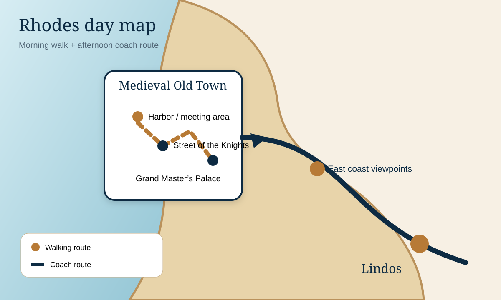

Rhodes chapters
MorningTown Walk · 8:45 AM
AfternoonEast Coast Drive · 1:15 PM
Total touringAbout 6 hours
PriorityShade + pacing
Two excursions, one carefully paced day
Rhodes combines a medieval walking tour in the morning with a scenic island drive in the afternoon. This guide keeps the Old Town focused, protects your energy between tours, and gives you context for the east coast and Lindos.
Rhodes Town Walk
Start8:45 AM
Duration2.5 hours
FocusPalace, Street of the Knights, Old Town
East Coast Island Drive
Departure is 1:15 PM for 3.5 hours. Use the interval for lunch, water, a cool rest, and a footwear check.

Morning route
Medieval Old Town
Palace, knightly street, walls, shade and efficient pacing.

Signature monument
Grand Master’s Palace
What to notice, visitor strategy and best courtyard views.

Afternoon
East Coast Drive
Scenic context, likely viewpoints and heat-smart expectations.

Orientation
Map & day plan
Harbor, Old Town, ship-return interval and east-coast route.